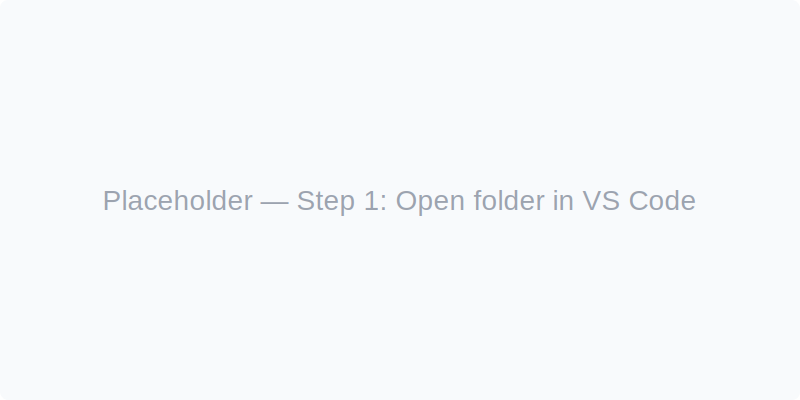
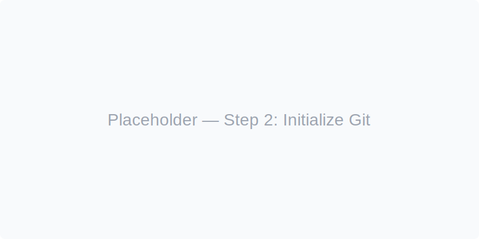

Quick overview
This site shows the basic steps to initialize a Git repo in VS Code and publish it to GitHub. Replace the placeholder images with screenshots later.
Steps to initialize Git and publish (summary)
-
Open your project in VS Code
Open the folder that contains your project files in VS Code.
-
Initialize a Git repository
Use the Source Control panel or run
git initin the terminal. -
Make first commit
Stage files and commit using the UI or
git add .andgit commit -m "Initial commit". -
Create repository on GitHub
Create a new repo on github.com and copy the remote URL.
-
Push from VS Code
Add remote and push:
git remote add origin <url>,git push -u origin main. -
Verify on GitHub
Open the repo page on GitHub to confirm files are published.
Visual walkthrough (placeholders)

Step 1 — Open folder in VS Code
Replace with screenshot of VS Code opening the project folder.

Step 2 — Initialize Git
Replace with screenshot of git init or Source Control panel.

Step 3 — Commit & Add Remote
Replace with screenshot of commit and adding remote.

Step 4 — Push and Verify
Replace with screenshot showing repository on GitHub.
Resources
- - Official Git docs: https://git-scm.com/docs
- - GitHub Docs: https://docs.github.com
- - VS Code Git integration: use the Source Control sidebar